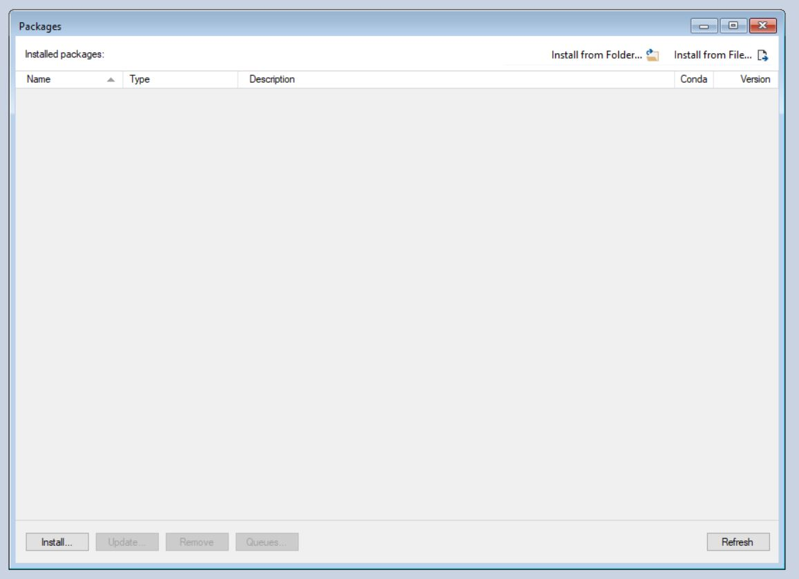
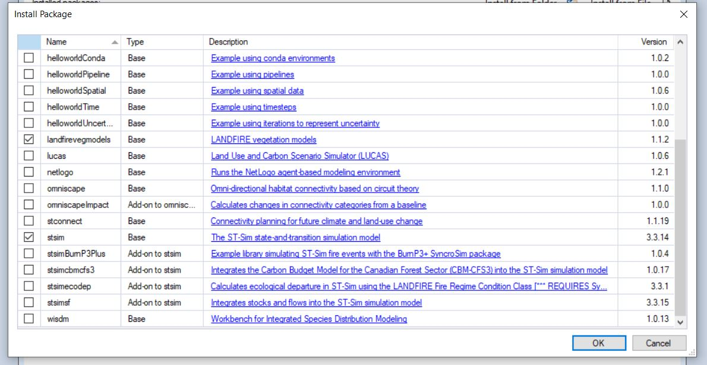
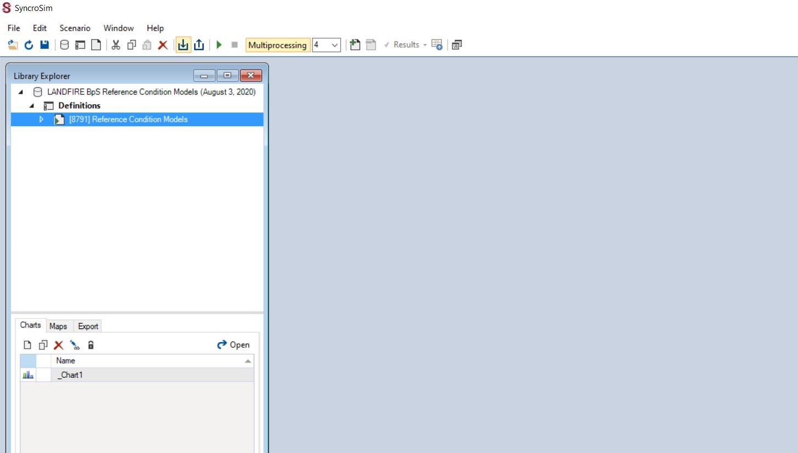
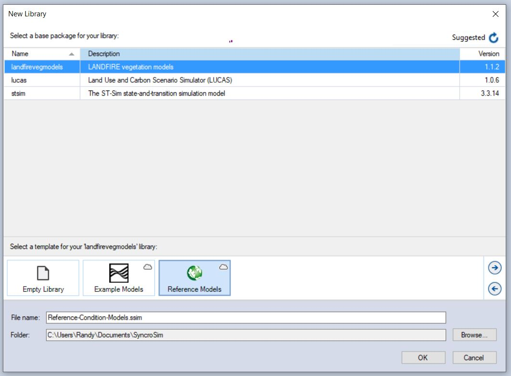
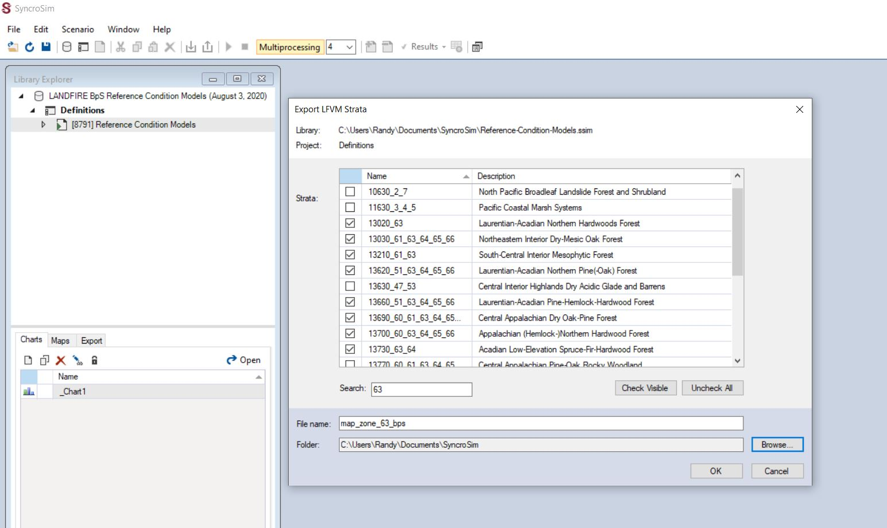
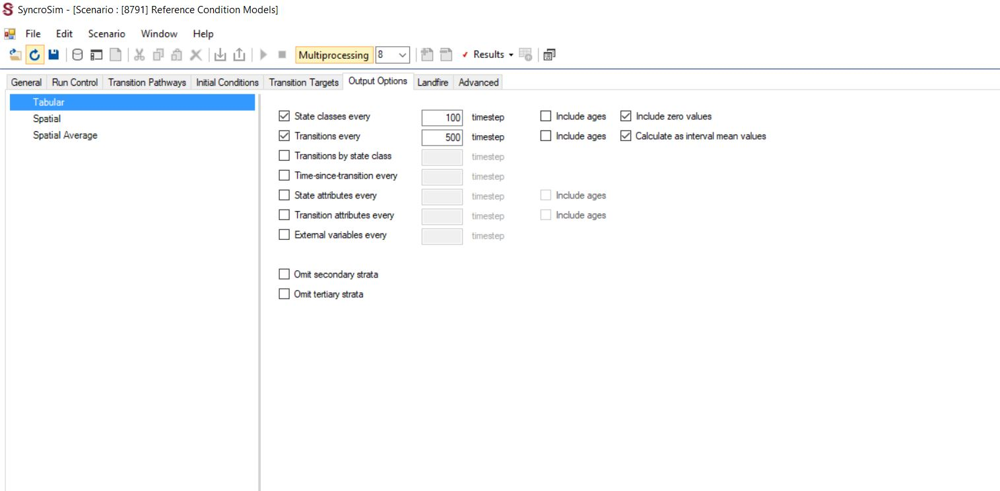
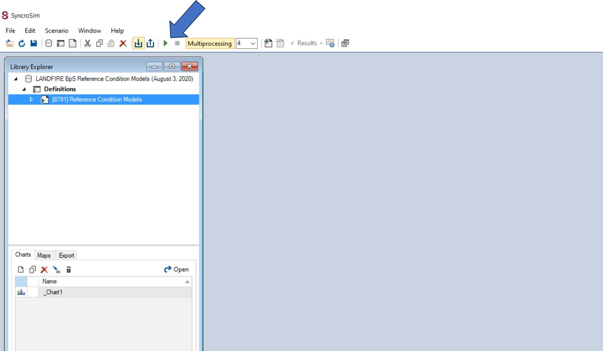
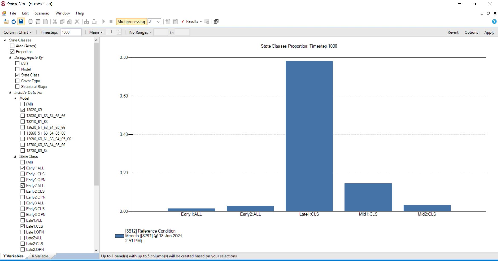

2 BpS Models
2.1 What you will learn here
For each Biophysical Setting (BpS, pre-European colonization ecosystem), LANDFIRE wanted to accomplish several things including:
- Document historical disturbances and their effects
- Describe and estimate the historical amounts of up to 5 succession classes per BpS
- Build a platform for understanding our ecosystems historically, and for gaming out how they might change under future conditions and management
To do so we worked with hundreds of experts to build state-and-transition models in modeling software. We now use SyncorSim, which will be the focus of this page.
On this page you will find guidance on how to:
- Download and install SyncroSim
- Load all LANDFIRE BpS models using the LANDFIRE Package
- Isolate a subset of BpS models
- Explore the models you are interested in
Note, there are many resources for these steps on the internet, so this page will cover the highlights, and point to those resources at the bottom,
2.2 Download and install SyncroSim
Installing SyncroSim is similar to installing most software, i.e., you download the application, then click to start an installer, etc. A few points about this particular software:
- Find the software at https://syncrosim.com/
- We typically accept all defaults when installing
- Installing on a governmental machine will likely present challenges.
2.3 Load all LANDFIRE BpS models using the LANDFIRE Package
While SyncroSim is powerful as downloaded, adding ‘packages’ will bring even more functionality. For our work you will need to add in the St-Sim and landfirevegmodels packages. In SyncroSim:
- Go to File -> Packages. Click the “Install” button. See “Packages Pane” screenshot below.
- From the list check the “St-Sim” and “landfirevegmodels” packages, when click “OK”. The install will happen automatically. See “Select packages” screenshot below.
- Close the “Packages” window.
Once you have those packages installed, you are ready to bring in the LANDFIRE vegetation models. To do that will take a few steps:
Note: you will need internet for this section.
- Go to File -> New… This will bring up a “New Library” window.
- In the New Library window highlight “landfirevegmodels” at the top of the window, then select “Reference Models” near the bottom. See “New Library Selections” screenshot below.
- Note where the “Reference Models” library will be saved. Change if needed. Hit “OK”, then grab a beverage as this will take a few minutes.
Note: an “Update Library” window may open once the Reference Models library is downloaded. Click “Apply” at the bottom of that window to proceed.
Once you complete these steps, SyncroSim will have downloaded and loaded the LANDFIRE BpS Reference Condition Models library into your “Library Explorer” window.
2.3.0.1 Screenshots of loading LANDFIRE Package and Reference Conditions Library
Packages Pane

Select packages

2.4 Isolate a subset of BpS models
We assume you will not want to explore all 900+ LANDFIRE models, so outline how to subset one or more individual models below.
- For good luck close and re-open SyncroSim. Seriously, after installing packages and libraries some of the functions just work better if you do so.
- If it is not there, open the LANDFIRE BpS Reference Condition Models library by going to File -> Open then navigating to the “Reference-Condition-Models.ssim” file, likely in your SyncroSim directory. You will then click “Open”.
- Once opened, the LANDFIRE BpS Reference Condition Models will be in the Library Explorer pane. You will also see, within the library, a “project” named “Definitions” and a “Scenaro” named “Reference Condition Models”.
- Click the “Reference Condition Models” scenario once to highlight it. See “Select Scenario” screenshot below.
- Go to Edit -> Export LFVM Strata to bring up the selection window. See “Export Strata” screenshot below.
- Once at the Export LFVM Strata window, you will check the BpSs of interest, give a file name for the new library and assign a folder that it will be saved to. See “Create new library with selected strata” screenshot below.
Note: we do not suggest selecting many strata at once until you are familiar with the modeling process. Stick to 1-3 initially.
2.4.0.1 Screenshots of Isolating a model
Select scenario

Export Strata

Create new library with selected strata

2.5 Explore the models you are interested in
OK you are doing a great job. Now you have a library with a subset of strata (i.e., BpSs in this case) that you care about. Now what?
By exploring the BpS models you can learn how the modeling experts parameterized them, and more interactively see how the disturbances and states all fit together.
Start exploring:
- Double click on “Reference Condition Models” then the Transition Pathways tab.
- To make viewing easier go to Window -> Arrange All.
- At the bottom will be tabs of all of the BpSs that are in this library. Click any one. See “Transitions Pane”.
- Click on any box to see the pathways associated with that state (i.e., succession class).
- If you want to run the scenario:
- Go to “Output Options” tab within the scenario, make sure that the “State classes every” box is set to 100 (i.e., not “1”). See “State Class Outputs” screenshot below.
- Go to “Run Control tab” and set the ‘Total iterations’ to 2.
- In the “Initial Conditions” tab, insure that the “Total Acres”and “Number of Simulation cells” boxes both have “1,000” For exploring we recommend these three steps as it will speed up your runs.
- In the Library Explorer highlight the scenario, then click the small green triangle at the top of the screen. See “Run your model” screenshot below.
- Make a chart by clicking the “New” icon in the “Charts” pane, then name it appropriately. See “Start new chart” screenshot below. You will change some settings to get your first chart:
- Change Line Chart to Column Chart (top left of window)
- Under “State Classes” select “Proportion”
- Under “Disaggregate by” check the “State Class” box
- Under “Include Data For”, click “State Class” then select the appropriate state classes
- Note: if you have multiple BpSs, you will also want to go to and select one “Model” under the “Include Data For” dropdown
- Click “Apply”
See “Set up your column chart” screenshot below.
“State Class Outputs” “Run your model” “Set up your column chart”
2.5.0.1 Screenshots of Running a Model and Making a Chart
State Class Outputs

Run your model

| Set up your column chart |
|  |
2.6 Additional Resources
- https://thenatureconservancy.github.io/landfiremodels/